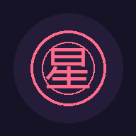

关闭

海报预览
已自动尝试下载。若浏览器未弹出下载，请长按图片选择「保存图片」。

添加后可以从桌面图标直接打开星六，体验更接近原生 App。
一款结合西方星座文化与传统民俗文化的趣味人格、运势、生活参考工具，还提供塔罗、生命灵数等西方文化玩法的娱乐化演绎，仅供娱乐解压。
合规说明：本产品为纯娱乐文化产品。全站已过滤玄学敏感表述：风水 → 居家环境氛围参考；吉凶 → 气场适配度；改运 → 生活状态优化；化解 → 环境调整建议。不涉及任何断言式表述、医疗投资建议等内容。
已自动尝试下载。若浏览器未弹出下载，请长按图片选择「保存图片」。